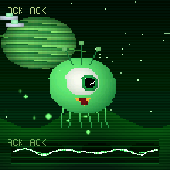
Browser + FM-1
Ack Ack / Invaders
An arcade world of alien formants, orbital drones and CRT graphics.
A pigeon choir, a whale pod, a singing frog, ink in motion. Musical instruments where every gesture changes the sound and the picture.
Free GPL core, with optional payments and support.
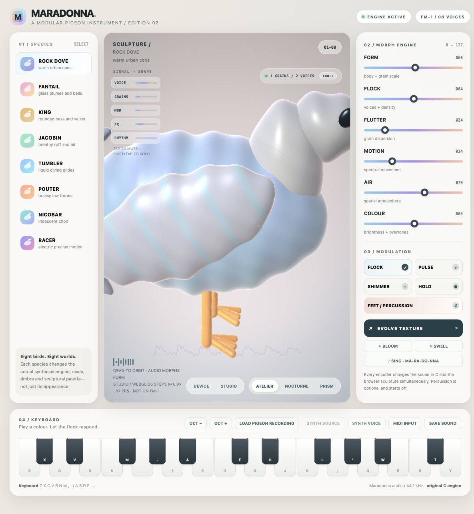
Play a browser edition, download an available FM-1 package, or explore a project’s visual identity. Each card shows what is available today. The stills come directly from the instruments’ native screen renderers.
Showing 25 projects

An arcade world of alien formants, orbital drones and CRT graphics.
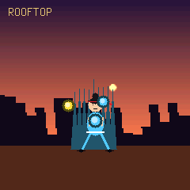
Charge-and-release synthesis in an original animated fighter world.
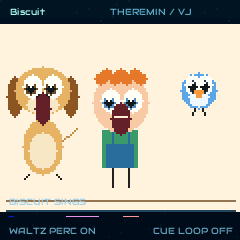
Conduct an original cast of singing characters with synthesized choir voices.
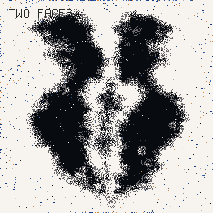
Morphing ink fields, vibration, static and tape-choir soundscapes.
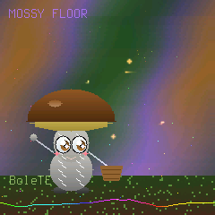
A mushroom-foraging world with sitar, tape flute and a tanpura drone.
This project is part of the collection. Public program downloads will follow its matching source package.
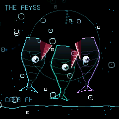
Synthesized whale song, coda rhythms, sonar and an animated ocean.
Includes the Co Da browser edition. The latest C0d3-Ah device package is awaiting its matching source.
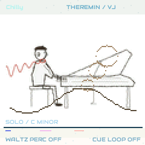
Draw a piano phrase and watch its strokes unravel into oscillator ribbons.
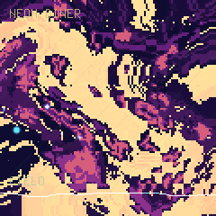
Granular video skies, detuned voices and time-catching gestures.
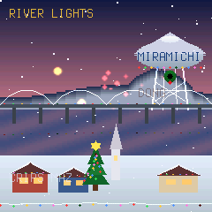
Winter ambience, lofi electric piano, bells and seasonal scenes.
This project is part of the collection. Public program downloads will follow its matching source package.
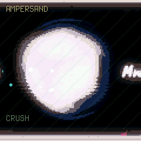
Crush, slice and rearrange sound while the picture breaks into blocks.
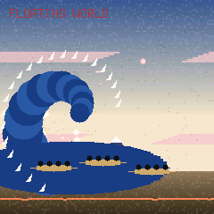
A woodblock-inspired VJ with plucked strings, flute and taiko voices.
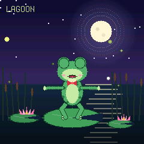
A singing frog’s lagoon with theremin, soprano, harp and a public-domain opera cue.
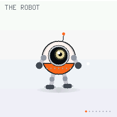
A modular robot whose parts morph with warmth, gravity, glitch and tape.
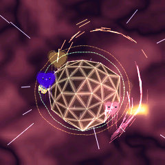
A granular planet instrument with sound, evolving forms and a playable browser companion.
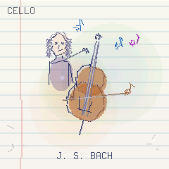
Animated instrument drawings perform public-domain classical themes and original pieces.
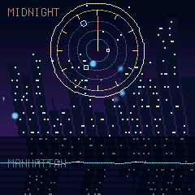
Cosmic architecture, slow pulses and granular counterpoint.
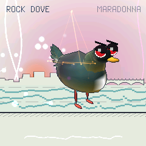
Eight pigeon-inspired species, granular synthesis and a sound-driven sculpture.
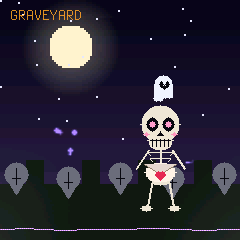
A skeleton’s midnight journey through theremin, organ and music-box worlds.
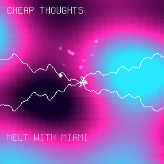
A groovebox and VJ deck built around original electronic tracks and scene-linked visuals.
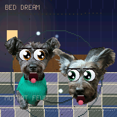
An ambient instrument built around two miniature schnauzers.
This project is part of the collection. Public program downloads will follow its matching source package.
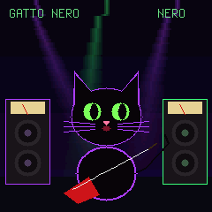
A black-cat rock synthesizer with saw walls, power chords and drums.
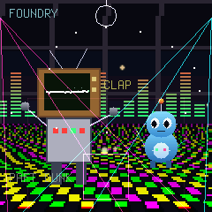
Two robots, supersaw house voices, drums and an acid bassline.
This project is part of the collection. Public program downloads will follow its matching source package.
A video-grain instrument with stutter, reverse and tape-stop gestures.
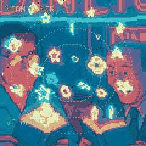
A video instrument with stackable mirror, trails, RGB split and VHS effects.
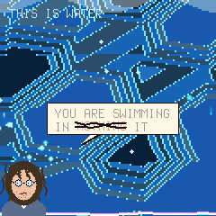
Plucked bass, vocal gestures, percussion and eight audiovisual waters.
No matching instrument. Try another name or sound.
A trilogy in computational phenomenology.
Modelling what experience hides.
My books explore experience, knowledge and the patterns that remain hard to see. The same curiosity runs through these playable worlds.
 VOLUME 1
VOLUME 1 VOLUME 2
VOLUME 2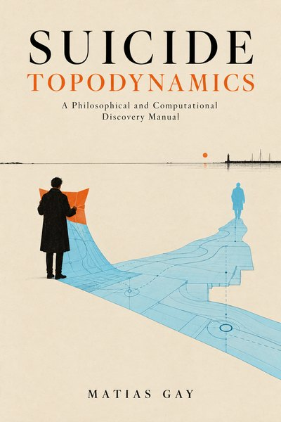
VOLUME 3Kindle, paperback and hardcover editions are available on Amazon. Prices and availability vary by marketplace.
Choose your contribution on itch.io or send a tip through Ko-fi. Support goes toward instrument development, device testing, compatibility and documentation.
Testing hardware, documentation and a defined development milestone are useful ways to contribute. Let’s agree on a clear scope and a practical result.
Contact Matias about sponsorship →
GitHub Sponsors application: submitted and awaiting staff approval.
Collection v0.2.0 · 18 November 2026. The creator reports that all latest builds passed testing on his physical FM-1. This packaging session checked WebAssembly audio/rendering and package integrity; it did not repeat device tests. Firmware register and SHA-256 hashes.
Back up projects and samples before changing firmware. Check your FM-1 hardware and flash-chip compatibility against the included documentation. Browser playback requires no flashing. Physical MIDI, mobile audio and broad browser compatibility remain separate checks.
Four current projects await matching source archives: BoleTE, Crips Maz, Mo Art Feud and updated Paft Dunk. Their program visuals are shown here. C0d3-Ah provides its source-backed Co Da browser edition while the latest device package awaits source matching. K-Tea’s browser was rebuilt from Round 4 source.
Code uses GPL-3.0-only with contributor and component notices retained. Credits · Complete source bundle · Release downloads. This is independent work; M-VAVE has not endorsed the collection.